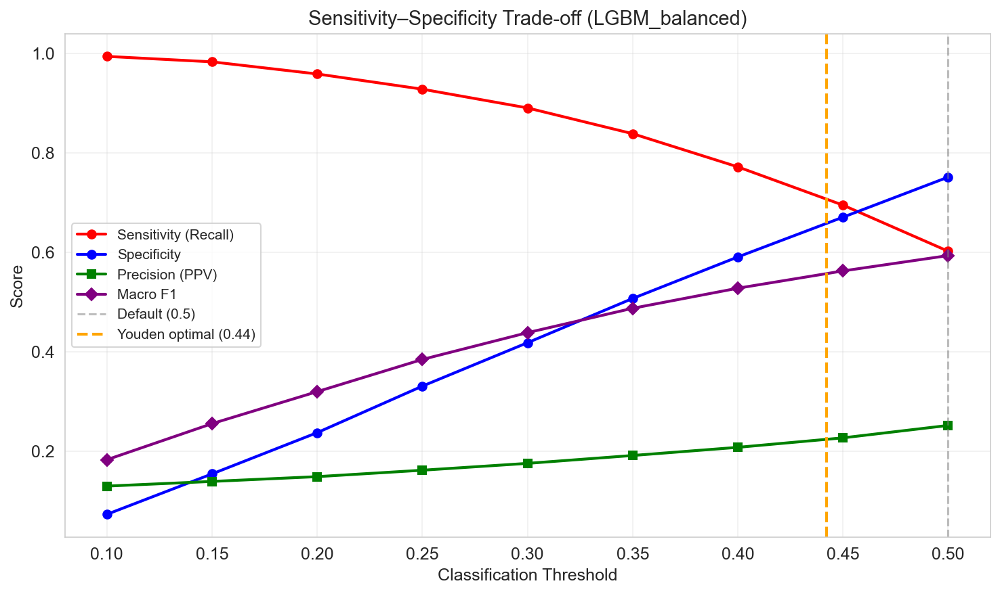
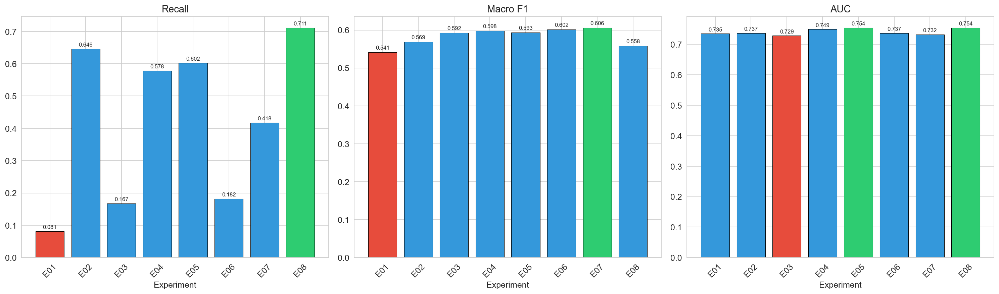

Approach
Every candidate feature and every model was tested as a standalone, logged experiment against a tracked baseline — nothing was accepted into the final pipeline without a measured improvement. The workflow was: (1) establish a baseline model on raw features, (2) propose a hypothesis for a new feature or feature group, (3) test it in isolation, (4) record accuracy / precision / recall / F1 / macro-F1 / AUC against the baseline, and (5) keep only what improved the model.
Stage 1 — Feature engineering experiments
Starting from 13 raw features, each hypothesis added a small, well-motivated feature group and was re-evaluated with Logistic Regression before moving on, isolating the effect of each addition.
| ID | Hypothesis | Model | Features | Macro-F1 | AUC | vs. baseline | Status |
|---|---|---|---|---|---|---|---|
| E001 | Baseline: raw features only | LogisticRegression | 13 | 0.5644 | 0.766 | — | baseline |
| E002 | + vital ranges (BP_range, HR_range, SBP_range) | LogisticRegression | 16 | 0.5644 | 0.766 | 0.0% | no change |
| E003 | + shock_index, pulse_pressure, MAP | LogisticRegression | 19 | 0.5729 | 0.7713 | +1.51% | improved |
| E004 | + missingness indicator flags | LogisticRegression | 24 | 0.5748 | 0.7755 | +1.84% | improved |
| E005 | + age interaction features | LogisticRegression | 28 | 0.5744 | 0.7777 | +1.77% | improved |
| E006 | + admission time features (all hypotheses) | LogisticRegression | 32 | 0.5763 | 0.7819 | +2.11% | improved |
| E007 | All features, Random Forest | RandomForest | 32 | 0.598 | 0.807 | +5.95% | improved |
| E008 | All features, Gradient Boosting | GradientBoosting | 32 | 0.6079 | 0.805 | +7.71% | improved |
Result: only vital ranges alone (E002) failed to move the
needle — every other feature group improved macro-F1 and/or AUC over
the previous step, and switching from a linear model to gradient
boosting (E007–E008) gave the largest single jump.
Stage 2 — Model & imbalance-handling comparison
With the feature set settled, the second round of experiments compared model families and class-imbalance strategies (class weighting vs. SMOTE oversampling) and tuned the decision threshold, since accuracy alone is misleading on an imbalanced clinical outcome.
| ID | Model | Threshold | Sensitivity | Specificity | PPV | Macro-F1 | AUC | Detected |
|---|---|---|---|---|---|---|---|---|
| E01 | LR baseline | 0.50 | 0.081 | 0.995 | 0.696 | 0.541 | 0.735 | 103/1274 |
| E02 | LR, class-balanced | 0.50 | 0.646 | 0.698 | 0.229 | 0.569 | 0.737 | 823/1274 |
| E03 | RF, class-balanced | 0.50 | 0.167 | 0.977 | 0.502 | 0.592 | 0.729 | 213/1274 |
| E04 | XGBoost, class-balanced | 0.50 | 0.579 | 0.767 | 0.257 | 0.598 | 0.749 | 737/1274 |
| E05 | LightGBM, class-balanced | 0.50 | 0.602 | 0.751 | 0.252 | 0.593 | 0.754 | 767/1274 |
| E06 | XGBoost, SMOTE | 0.50 | 0.182 | 0.976 | 0.514 | 0.602 | 0.737 | 232/1274 |
| E07 | RF, SMOTE | 0.50 | 0.418 | 0.848 | 0.276 | 0.606 | 0.732 | 532/1274 |
| E08 | LightGBM, tuned threshold | 0.44 | 0.711 | 0.658 | 0.225 | 0.558 | 0.754 | 906/1274 |


Class-weighted LightGBM with a lowered decision threshold (E08) gave the best sensitivity (0.711) while keeping AUC competitive — this became the basis for the final production model described in Results, which was further trained on cleaned data including the optional lab features.
Why not just maximize accuracy?
The outcome is heavily imbalanced (most ICU stays do not end in deterioration), so a model that predicts "stable" for everyone scores ~90% accuracy while catching zero at-risk patients — exactly the failure mode seen in the untuned baseline (E01: sensitivity 0.081). Every experiment was therefore judged primarily on sensitivity and macro-F1, which weight the minority (at-risk) class fairly, rather than on raw accuracy.